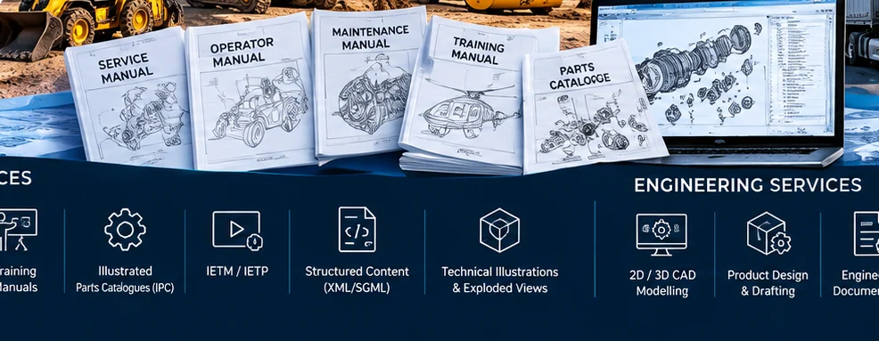

ENGINEERING KNOWLEDGE, CLEARLY DELIVERED
Making complex
engineering clear.
Technical publications and visual documentation for the equipment that moves our world.
TECH PUBOur core specialization
15+ YEARSTechnical lead’s experience
INDIATirupati-based team
SCROLL TO EXPLORE ↓
01 / OUR PURPOSEFrom technical complexity
From technical complexity
to everyday clarity.
A good technical document does more than explain a machine. It helps people operate safely, diagnose problems, maintain equipment and make confident decisions.
KIZOREX brings engineering understanding and documentation discipline together to make information useful at every stage of the product lifecycle.
The story behind KIZOREX ↗
PRECISION
IN EVERY DETAIL
IN EVERY DETAIL
02 / THE DIFFERENCEBuilt around the
Built around the
people who use it.
We believe documentation should be accurate, easy to navigate and aligned with real equipment workflows. Our approach prioritizes technical understanding, clear visual communication and careful review.
See our delivery approach ↗LET’S WORK TOGETHERHave a documentation challenge?
Request a quote ↗